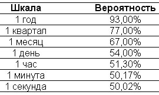

{% include JB/setup %}
{% raw %}
<div>

<span><span id="id7"><div class="title2">
<p class="p">Глава 3</p>
<p class="p">Размышления о математической истории</p>
</div><div class="cite">
<p class="p1"><em class="calibre">О методе Монте-Карло как метафоре для понимания последовательности случайных исторических процессов. О случайности и фальшивой истории. Возраст красив почти всегда, а новое и юное обычно ядовито. Запишите вашего историка на курсы по альтернативной истории для начинающих.</em></p>
</div><p class="subtitle">Европейский плейбой-математик</p><p class="p1">Существует стереотипный образ математика: анемичный человек с косматой бородой и длинными грязными ногтями, тихо работающий за спартанским, неприбранным письменным столом. У него неразвитые мышцы и круглый живот, он сидит в захламленном кабинете, с головой погрузившись в работу, и, очевидно, не замечает убожества окружающей его обстановки. Он вырос при коммунистическом режиме, говорит хриплым голосом, с сильным восточноевропейским акцентом. Не так давно американское общество столкнулось с подобным персонажем в лице Унабомбера<a href="part0029.html#id11" class="a">[20]</a>, бородатого математика, жившего отшельником в ветхой хижине и убивавшего людей, которые занимались продвижением современных технологий. Ни один из журналистов не смог даже приблизиться к пониманию его диссертации на тему «Комплексные границы», поскольку она никак не связана с практической жизнью (сущность комплексного числа полностью абстрактна, это воображаемое число, включающее в себя квадратный корень из минус единицы, у него нет аналогов за пределами мира математики).</p><p class="p1">Название «Монте-Карло» ассоциируется с легкими порывами средиземноморского бриза, огнями казино и образом загорелого столичного жителя из когорты европейских плейбоев. Этот человек живет в высотных апартаментах, играет в теннис, но не откажется и от партии в шахматы или бридж. Он водит спортивный автомобиль стального цвета, носит отутюженные костюмы от итальянских кутюрье, осмотрительно и гладко говорит о тех скучных, но реальных вещах, которые журналист может легко описать публике понятными словами. А в казино он умело считает карты, анализирует шансы и делает осмысленные ставки, для которых его мозг выдает расчет оптимальной суммы. Этакий умный брат Джеймса Бонда.</p><p class="p1">Когда я думаю о математическом методе Монте-Карло, то мне кажется удачным сочетание качеств этих двух людей: реализм игрока в казино без его поверхностности в соединении с интуицией математика без излишней абстрактности. На самом деле этот метод имеет огромное практическое значение, и в нем нет математической сухости. Я попал в зависимость от него в ту самую минуту, когда стал трейдером. Он повлиял на мои мысли по всем вопросам, связанным со случайностью. Большинство примеров в книге смоделированы с помощью описанного в этой главе генератора Монте-Карло. Это средство не столько для расчетов, сколько для анализа. Да и вообще математика — скорее способ размышления, нежели вычисления.</p><p class="empty-line"></p><p class="p1"><strong class="calibre3">Инструменты</strong></p><p class="p1">Обсуждение альтернативных вариантов истории, начатое в предыдущей главе, можно продолжить и подкрепить технически. Речь идет об инструментах, которые я использую в своей профессии для игры с неопределенностью. Чуть позже я опишу их в двух словах. Если коротко, то метод Монте-Карло заключается в формировании искусственной истории. Для начала рассмотрим несколько понятий.</p><p class="p1">Первыми разберем выборочные траектории. У невидимых вариантов истории есть научное название — «альтернативные выборочные траектории», этот термин позаимствован из раздела теории вероятности, посвященного стохастическим процессам. Исследование траектории, а не результата означает, что речь идет не об анализе сценариев «в стиле МВА», а об изучении последовательности сценариев во времени. Нас интересует не где птица переночует завтра, а какие места она может посетить к этому моменту. Нас беспокоит не то, сколько инвестор заработает, скажем, за год, а, скорее, сколько раз за это время у него сожмется сердце от колебаний цен. Выборка и предполагает рассмотрение одного из возможных исходов. Выборочная траектория может быть заданной или случайной, это не одно и то же.</p><p class="p1">«Случайной выборочной траекторией» в математике называется последовательность модельных исторических событий, имеющая начало и конец, а также заданный уровень неопределенности. Слово «случайный» не следует ошибочно считать синонимом слова «равновероятный» (то есть имеющий одинаковую вероятность). У некоторых исходов вероятность будет выше. Регулярное измерение температуры у вашего родственника, заболевшего в экспедиции брюшным тифом, — иллюстрация случайной выборочной траектории. В качестве примера можно привести также симуляцию цен на акции вашей любимой компании из сектора высоких технологий, определяемых ежедневно на момент закрытия торгов в течение, скажем, одного года. Начавшись со 100 долларов, в одном из сценариев эта цена приходит в итоге к 20 долларам с максимумом в 220 долларов; в другом она поднимается до 145 долларов при минимуме в 10 долларов. Еще один пример — динамика вашего состояния в течение вечера в казино. Вы начинаете с 1000 долларов в кармане и считаете деньги каждые пятнадцать минут. По одной выборочной траектории у вас к полуночи будет 2200 долларов, по другой вы едва наскребете 20 долларов на такси.</p><p class="p1">«Стохастическим процессом» называется последовательность событий, происходящих во времени. Стохастика — красивое греческое название случайности. Этот раздел теории вероятности посвящен изучению последовательности случайных событий, его можно назвать «математической историей». Главная характеристика процесса состоит в его протяженности во времени.</p><p class="p1">Так что же такое генератор Монте-Карло? Представьте, что у себя на чердаке вы создали идеальную рулетку, не прибегая к услугам столяра. Можно написать компьютерную программу, симулирующую практически все, что угодно. Она будет даже лучше (и дешевле), чем колесо рулетки, созданное вашим знакомым мастером, поскольку не будет предпочитать одно число остальным за счет перекоса конструкции или неровности пола (этот недостаток называется «смещением»).</p><p class="p1">С тех пор как я стал взрослым, ничто не напоминало мне игрушку так сильно, как симуляции методом Монте-Карло. Можно создать тысячи, миллионы случайных выборочных траекторий и изучить их особенности и доминирующие характеристики. Основным помощником в этом исследовании является компьютер. Гламурная отсылка к Монте-Карло подчеркивает метафору — вы симулируете случайные события по примеру виртуального казино. Нужно задать набор условий, соответствующих реальности, и начать вычисление возможных последовательностей событий. Без особых познаний в математике с помощью этого метода можно симулировать ситуацию, в которой восемнадцатилетний ливанский подросток-христианин последовательно играет в «русскую рулетку» на заданную сумму, и увидеть, сколько попыток приведут к обогащению или как долго в среднем он сможет играть, пока не попадет на кладбище. Мы можем предположить, что в барабане 500 гнезд, — тогда вероятность смерти уменьшится — и посмотреть, что из этого выйдет.</p><p class="p1">Впервые симуляции методом Монте-Карло использовались военными физиками в лаборатории Лос-Аламос во время подготовки к испытаниям атомной бомбы. Этот метод стал популярным инструментом финансовой математики в восьмидесятые годы, особенно в свете теории случайных блужданий цен на активы. Конечно, для случая с «русской рулеткой» такой аппарат не нужен, но для решения многих задач, особенно отражающих ситуации из реальной жизни, требуется его мощь.</p><p class="empty-line"></p><p class="p1"><strong class="calibre3">Математика метода Монте-Карло</strong></p><p class="p1">Истинные математики не любят метод Монте-Карло, это факт. Они уверены, что его использование заслоняет всю красоту и элегантность их науки, и называют этот метод грубой силой. Зачастую симуляцией Монте-Карло (и другими компьютерными хитростями) мы можем заменить свои знания математики. Например, любой человек без особых познаний в геометрии может таинственным, почти мистическим способом рассчитать число пи. Как? Нарисовать круг, вписанный в квадрат, и «стрелять» в картинку случайным образом (как в аркадных играх), при этом вероятность попадания в любую точку картинки одинакова (это иногда называют равномерным распределением). Частное от деления количества «пуль», попавших внутрь круга, на количество «пуль» за его пределами даст число пи с точностью до почти бесконечного числа знаков после запятой. Ясно, что это не самый эффективный способ использования компьютера, ведь число пи можно рассчитать аналитически, применяя математические формулы, но описанный метод позволяет некоторым пользователям понять тему интуитивно, а не с помощью строчек уравнений. Многим людям (к ним отношусь и я) легче усвоить материал именно таким способом (так устроены их разум и интуиция). Возможно, компьютер чужд человеческому мозгу, как и математика.</p><p class="p1">Я не «носитель» математического языка, я не могу говорить на нем, как на родном, скорее в моей речи чувствуется иностранный акцент. Математические вопросы меня интересуют не сами по себе, а только для решения прикладных задач, в то время как математики скорее занимаются развитием самой науки (придумывая и доказывая теоремы). Я не могу концентрироваться на решении уравнений, пока какая-то реальная задача (с легкой примесью жадности) не послужит мотивирующей силой. Поэтому многому я научился благодаря торговле производными ценными бумагами (теорию вероятности меня заставили изучать опционы). В обычной жизни многие увлеченные игроки — люди весьма посредственного ума, но благодаря своей необузданной жадности они приобретали выдающиеся способности считать карты.</p><p class="p1">Другим примером может быть грамматика. На нее, скучную и лишенную озарений, математика нередко бывает похожа. Некоторые интересуются грамматикой ради нее самой, а некоторые всего лишь хотят не делать ошибок при составлении документов. Людей из второй категории называют квантами — как и физики, мы больше заинтересованы в использовании математических средств, чем в средствах как таковых. Математиками рождаются, а не становятся. Физиками и квантами тоже. Меня не заботит элегантность и качество используемых мной математических инструментов, если я могу получить верный результат. Я прибегаю к методу Монте-Карло всегда, когда возможно. И он делает свое дело. Он помогает также решать задачу обучения, так что я буду использовать его в этой книге для примера.</p><p class="p1">Вероятность является междисциплинарной областью изучения, поскольку это понятие относится не к одной науке, а к матери всех наук — к знанию вообще. Невозможно оценить качество приобретаемых нами знаний без скидки на некоторую случайность, присущую способу их получения, и исключения из аргументов случайных совпадений, которые могут просочиться в их конструкцию. Научные подходы к рассмотрению вероятности и информации одинаковы. Буквально все великие мыслители проявляли к вероятности интерес, зачастую всепоглощающий. Эйнштейн<a href="part0029.html#id10" class="a">[21]</a> и Кейнс<a href="part0029.html#id9" class="a">[22]</a>, два величайших, по моему мнению, ума, начали с нее свой интеллектуальный путь. Эйнштейн написал свою главную работу в 1905 году, в ней он практически впервые исследовал последовательность случайных событий в терминах вероятности, а именно движение взвешенных частиц в неподвижной жидкости. Его статью по теории броуновского движения можно считать основой метода «случайного блуждания», применяемого в финансовом моделировании. Что же касается Кейнса, этот образованный человек был не тем экономистом, которого любят цитировать облаченные в твид «левые», а автором влиятельного, междисциплинарного и убедительного труда «Трактат о вероятности». До погружения в темные воды политической экономии Кейнс занимался вероятностью. У него были и другие интересные черты (он в итоге «лопнул», проиграв огромные деньги с брокерского счета, — понимание людьми вопросов вероятности не сказывается на их поведении).</p><p class="p1">Читатель может решить, что после таких размышлений о вероятности следующим шагом должно стать погружение в философию, особенно в ту ее область, которая занимается проблемами познания и называется «эпистемология», «методология» или «философия науки». Но мы пока этого делать не будем и вернемся к этой теме позже.</p><p class="subtitle">Развлечение на чердаке</p><p class="p1"><strong class="calibre3">Создание истории</strong></p><p class="p1">В начале девяностых я увлекался различными генераторами Монте-Карло, которые учился строить, волнуясь от чувства создания истории, словно <em class="calibre">Демиург —</em> творец мира. То же делали многие мои друзья, работавшие с численными методами в финансовой сфере. Создание виртуальных вариантов истории и анализ разброса между различными результатами держит в большом напряжении. Этот разброс служит индикатором, фиксирующим степень сопротивляемости случайности. Вот почему я думаю, что мне чрезвычайно повезло с выбором профессии: одна из привлекательных сторон жизни трейдера на рынке опционов состоит в том, что примерно 95 % дня можно свободно думать, читать и заниматься исследованиями (или размышлять, съезжая с горы на лыжах, в тренажерном зале или, что более эффективно, сидя на скамейке в парке). А еще у меня есть привилегия работать дома на специально оборудованном чердаке.</p><p class="p1">Дивидендами компьютерной революции являются не поток все множащихся сообщений электронной почты и доступ к чатам, а неожиданная доступность быстрых процессоров, способных генерировать миллионы выборочных траекторий в минуту. Мне, например, нравится только формулировать задачи. Я всегда осознавал, что без особого энтузиазма решаю уравнения, и редко демонстрировал мастерство в этом деле. И вдруг программа дала мне возможность с минимальными усилиями справиться с наиболее неподатливыми из них. Теперь я могу почти все.</p><p class="empty-line"></p><p class="p1"><strong class="calibre3">Чердак заполнили зорглабы</strong></p><p class="p1">Программа Монте-Карло вдохновила меня на интересные приключения. В то время как мои коллеги были с головой погружены в новости, сообщения центральных банков, финансовые отчеты, экономические прогнозы, спортивные результаты и, не самое последнее, в офисные интриги, я начал играть с программой в области, выходящей за пределы привычного анализа финансовой вероятности. Естественным направлением экспансии аналитика-любителя является эволюционная биология — привлекает универсальность ее выводов и их применимость к финансовым рынкам. Я запустил симуляцию создания популяции «зорглабов» — животных, быстро мутирующих под воздействием климатических изменений, и стал свидетелем самых неожиданных результатов (некоторые из них использованы в главе 5). Я был дилетантом, спасающимся от скуки мира бизнеса, и просто хотел развить интуицию в отношении случайных событий — ту интуицию, которой любители пользуются вместо чрезмерно детализированной софистики профессиональных исследователей. Еще я играл с молекулярной биологией, генерируя случайное возникновение раковых клеток и наблюдая удивительные аспекты их эволюции. Естественным аналогом симуляции зорглабов стало создание популяций «быка-идиота», «медведя импульсивного» и «трейдера осторожного» в разных режимах функционирования рынка, скажем, резкого роста и обвала цен, и исследование их краткосрочной и долгосрочной выживаемости. В этих обстоятельствах «быки-идиоты», богатевшие в ходе ралли, использовали полученные доходы для покупки новых активов, еще более подталкивая цены вверх, а потом дело заканчивалось полным крахом. Трейдеры, настроенные «по-медвежьи», наоборот, редко теряли на этапе перехода роста в спад. Моя модель показывала, что на самом деле в итоге почти никто из них не выживал: «медведи» с началом ралли «вылетали» с рынка, как мухи, а «быки» попадали на бойню — когда выключали музыку, их бумажные прибыли испарялись. Но было одно исключение: некоторые из тех, кто торговал опционами (я называл их покупателями опционов), оказывались замечательно стойкими, и я хотел быть одним из них. Почему? Потому что они имели страховку на случай, если пузырь лопался, они могли безмятежно спать по ночам, поскольку знали, что если их карьере что-то угрожает, то это не результат событий одного торгового дня.</p><p class="p1">Если тон этой книги немного и отдает культурой дарвинизма и эволюционного мышления, то это следствие способа мыслить, которому меня научил метод Монте-Карло, а не формального дистанционного обучения дисциплинам естествознания.</p><p class="p1">Сознаюсь, что постепенно я перерос привычку генерировать случайные последовательности каждый раз, когда обдумывал новую идею, но, развлекаясь с программой Монте-Карло на протяжении многих лет, я больше не могу думать о полученном результате без анализа альтернативных нереализованных вариантов. Я называю это «интегрирование по вариантам истории», позаимствовав выражение у яркого физика Ричарда Фейнмана<a href="part0029.html#id8" class="a">[23]</a>, применявшего такой метод при изучении динамики субатомных частиц.</p><p class="p1">Использование метода Монте-Карло для создания и переделки истории напоминает экспериментальные книги (в жанре так называемого нового романа), популярные в шестидесятых-семидесятых годах, таких авторов, как Ален Роб-Грийе<a href="part0029.html#id7" class="a">[24]</a>. Там одни и те же главы писались и переписывались, и каждый раз автор менял сюжет, словно новую выборочную траекторию. В любом случае автор был свободен от привязки к созданной в прошлом ситуации и мог позволить себе прихоть менять сюжет задним числом.</p><p class="empty-line"></p><p class="p1"><strong class="calibre3">Искажение истории</strong></p><p class="p1">Еще немного об истории с точки зрения метода Монте-Карло. Мудрость таких древних сюжетов, как рассказ о Солоне, только выигрывает от патины времени и побуждает меня проводить много часов в компании классических историков. Однако это противоречит общепринятым взглядам: обычно уроки истории не приносят людям пользы, что слишком хорошо подтверждается бесконечным повторением одинаково сконфигурированных взлетов и падений на современных рынках. Для меня история — скорее набор событий, нежели теория или крупноформатный историзм (с их склонностью к якобы существующим эволюционным законам) и нежели та приводящая к заключению о «конце истории»<a href="part0029.html#id6" class="a">[25]</a> смесь гегельянства и псевдонаучности (при анализе событий обычно не учитывают, что их последовательность могла быть случайной, а при помощи контролируемого эксперимента проверить выводы историков невозможно). История полезна тем, что заставляет размышлять, отсылая к прошлому и позволяя легко овладевать чужими идеями, использовать их с выгодой для себя, а также исправлять свою неспособность учиться у других. Я хотел бы воспитать в себе уважение к старшим, усилить инстинктивное почтение к убеленным сединами людям, но эти чувства ослаблены моим опытом трейдера. Я знаю, что возраст и успех не связаны между собой. На самом деле у меня есть два способа учиться у истории: из прошлого, изучая наследие предков, и из будущего — благодаря моей игрушке под названием «Монте-Карло».</p><p class="empty-line"></p><p class="p1"><strong class="calibre3">Горячая печка</strong></p><p class="p1">Выше я упоминал, что мы не привыкли учиться у истории. Трудно спорить с тем, что благодаря своей человеческой природе мы не ищем опыт в культуре, а любим подражать привлекательным для нас людям. То, что дети учатся только на своих ошибках, стало тривиальностью: они не будут трогать разожженную печь лишь после того, как обожгутся сами, никакие предупреждения быть хоть немного осторожнее не помогут. Взрослые тоже страдают от этого. Данную тему изучали пионеры поведенческой экономики Дэниел Канеман и Эймос Тверски на примере выбора людьми рискованного медицинского лечения. В вопросах диагностики и профилактики я и сам очень небрежен (веря в свою исключительность, я исключаю риски в отношении себя), хотя крайне агрессивно лечусь (обжегшись, я реагирую слишком остро, а это плохо соотносится с рациональным поведением в условиях неопределенности). Это врожденное недоверие к чужому опыту встречается не только у детей или людей вроде меня, но и у тех, кто принимает серьезные решения в компаниях, а также у крупных инвесторов.</p><p class="p1">Если вы думаете, что чтение исторических книг научит вас чужим ошибкам, поразмышляйте над следующим экспериментом XIX века. В хорошо известном психологическом случае у швейцарского врача Клапареда<a href="part0029.html#id5" class="a">[26]</a> была пациентка, страдавшая потерей памяти, которая изнемогала от своего недуга. Ее положение было настолько тяжелым, что врачу приходилось каждые пятнадцать минут представляться ей, чтобы она помнила, кто он такой. Однажды Клапаред перед рукопожатием с пациенткой тайком зажал в руке булавку. На следующий день, когда он попытался поздороваться с ней, она быстро отдернула руку, <em class="calibre">хотя по-прежнему не узнавала его.</em> С тех пор наблюдение за множеством больных, потерявших память, показало, что некоторые из них каким-то образом неосознанно учатся, не подозревая об этом. Научное название двух видов памяти, сознательной и бессознательной, — «декларативная» и «недекларативная». Основанное на прошлом опыте стремление избежать опасности во многом относится ко второй из них. Я начал уважать историю, только когда понял, что не запрограммирован узнавать ее по учебникам.</p><p class="p1">Хуже то, что иногда мы не учимся даже на опыте своей жизни. Несколько разных исследований выявили неспособность людей учитывать их собственную реакцию на происходившее с ними раньше: они забывают краткосрочность эмоционального влияния (позитивного или негативного) и продолжают думать, что покупка какой-то вещи сделает их надолго, если не навсегда, счастливыми или что неудача означает сильные и длительные страдания (хотя в прошлом похожая неудача не оказывала на них серьезного влияния, а радость от покупки длилась недолго).</p><p class="p1">Все мои коллеги, не желавшие учиться на чужих ошибках, в конце концов эффектно «лопнули», и я не встречал еще людей такого рода, сумевших избежать поражения. Но по-настоящему интересно, что их подходы к работе замечательно похожи. Повторюсь, «лопнуть» означает не просто потерять деньги, это значит потерять деньги совершенно неожиданно, когда в это не можешь поверить. Нет ничего плохого в риске, когда он осознан и рискующий правильно оценивает его степень. Занятно, что «лопнувшие» трейдеры были уверены в своем контроле над ситуацией: это не был отважный риск, они его просто игнорировали. Я замечаю много общего у тех, кто «лопнул» в результате краха фондового рынка в 1987 году, кто «лопнул» в результате японского кризиса 1990 года, кто «лопнул» в результате падения рынка облигаций в 1994 году, кто «лопнул» в России в 1998 году и кто «лопнул», совершая «короткие» продажи акций в NASDAQ. Все они заявляли, что «пришли иные времена» или что «их рынок совсем другой», и в подтверждение своих утверждений выдвигали внешне взвешенные, разумные аргументы (имевшие экономическую природу). Они не способны были учесть чужой опыт, легкодоступный и открытый, ведь каждый предыдущий крах подробно описан в книгах, которые можно купить в любом магазине. Помимо этих общих системных «хлопков» я видел сотни опционных трейдеров, вынужденных уйти с рынка после того, как они «лопнули» самым глупым образом, несмотря на предупреждения ветеранов, как дети, трогающие раскаленную печь. Я вспоминаю собственное отношение к диагностике и профилактике различных заболеваний, которые могут у меня быть. Каждый человек считает, что с ним этого произойти не может, получая в результате сильнейший шок при виде диагноза: «Почему я?»</p><p class="empty-line"></p><p class="p1"><strong class="calibre3">Умение предсказывать прошлое</strong></p><p class="p1">Мы можем рассматривать эту тему под различными углами. Специалисты называют склонность к отказу учиться на чужих ошибках историческим детерминизмом. Говоря просто, мы считаем, что поняли бы, если бы на наших глазах происходили эпохальные события. Мы верим, что люди, ставшие свидетелями, скажем, биржевого краха 1929 года, знали, в какой острый исторический момент они живут, и, соответственно, повторись такие события, они тоже поняли бы суть происходящего. Знай мы заранее, что приближается что-то серьезное, жизнь напоминала бы приключенческий фильм. Трудно представить, что люди, у которых на глазах творилась история, не знали о важности момента. Почему-то все уважение, питаемое нами к прошлому, не переносится должным образом на нашу трактовку настоящего.</p><p class="p1">Жан-Патрик из предыдущей главы был внезапно заменен на интересного типа из правительства, который никогда не занимал должностей, предполагающих взаимодействие со случайностью. Он всего лишь окончил «правильный» институт государственной службы, где людей учат писать отчеты, и занимал в своем учреждении какой-то высокий пост. Как обычно бывает в случае, когда отсутствует система объективной оценки сотрудников, он попытался выставить предшественника в дурном свете. Жан-Патрик был объявлен небрежным и непрофессиональным. Первым шагом чиновника был формальный анализ наших сделок, и он обнаружил, что мы заключаем их несколько больше, чем нужно, что приводит к очень высоким операционным расходам. Он изучил огромное количество сделок трейдеров на валютном рынке и написал отчет, в котором объяснил, что в случае лишь примерно 1 % этих транзакций получается значительная прибыль, остальные генерируют небольшую прибыль или даже убытки. Он был шокирован тем, что трейдеры не стремятся увеличить количество прибыльных сделок и уменьшить количество убыточных. Для него было очевидно, что мы должны это немедленно исправить. Если бы мы всего лишь удвоили число выигрышей, результаты компании были бы такими прекрасными! Как же вы, высокооплачиваемые трейдеры, не подумали об этом раньше?</p><p class="p1">Постфактум все кажется очевидным. Чиновник был очень умным человеком, но такая ошибка встречается намного чаще, чем можно подумать. Она связана со способом, каким наш мозг обрабатывает уже случившееся. Когда вы смотрите в прошлое, оно всегда детерминировано, поскольку существует одно-единственное наблюдение. Наш мозг интерпретирует большинство событий с точки зрения не предшествующих им, а последующих за ними. Представьте, что вы сдаете экзамен, точно зная ответ. Хотя мы понимаем, что история движется вперед, трудно осознать, что мы представляем ее ретроспективно. Почему так происходит? Мы обсудим это в главе 11, но вот одно из возможных объяснений: наш мозг настроен в основном на быстрое избавление от неприятностей и продолжение рода, а не на понимание устройства мира. Если бы мы рождались для постижения сути вещей, наш мозг позволял бы проигрывать прошлую историю, как видеомагнитофон, в правильной последовательности, это сделало бы нашу жизнь намного спокойнее, и мы могли бы избегать неприятностей. Психологи называют переоценку значимости информации, имевшейся у человека в момент совершения события, сделанную с учетом полученной позднее информации, ошибкой ретроспекции, то есть эффектом «я знал, что так случится».</p><p class="p1">Теперь чиновник называет убыточные сделки «большими ошибками», совсем как журналисты называют «ошибками» решения, которые стоили кандидатам проигрыша на выборах. Я буду повторять до хрипоты: ошибка — это не то, что определяется постфактум. Свершившееся можно рассматривать только с учетом информации, имевшейся до этого.</p><p class="p1">Но есть и худшее проявление ошибки ретроспекции: хорошие <em class="calibre">предсказатели</em> прошлого думают, будто так же хорошо могут предсказывать и будущее. Вот почему трагедии вроде 11 сентября 2001 года никогда не научат нас тому, что мы живем в мире, где важные события непредсказуемы, — даже если <em class="calibre">теперь</em> кажется, что разрушения башен-близнецов можно было ожидать.</p><p class="empty-line"></p><p class="p1"><strong class="calibre3">Мой Солон</strong></p><p class="p1">Есть еще одна причина, заставляющая меня все время помнить о предупреждении Солона. Мысленно я переношусь на полоску земли на восточном берегу Средиземного моря, где произошла та история. Мои предки испытали периоды чрезвычайного богатства и неприкрытой нищеты всего лишь в течение жизни одного поколения и настолько неожиданно все потеряли, что мои нынешние знакомые, привыкшие к устойчивому линейному росту благосостояния, просто не могут в это поверить. Все мои знакомые сталкивались (до настоящего момента) с небольшим числом финансовых неудач (не считая Великой депрессии) или — в большинстве случаев — не настолько интересуются историей, чтобы размышлять о минувшем. Нам же, православным грекам из восточной части Средиземноморского региона, потомкам подданных разграбленной Восточной Римской империи, кажется, что наши души связаны с памятью о том печальном весеннем дне 500 лет назад, когда турки ворвались в Константинополь и он перестал существовать, сделав нас последними обломками погибшей империи, меньшинством в исламском мире, хотя и преуспевающим, но с очень непрочным богатством. Еще мне ярко видится образ моего величественного деда, бывшего заместителя премьер-министра и сына заместителя премьер-министра (я ни разу не видел его иначе, как в костюме), живущего в невзрачной квартирке в Афинах. Его дом был взорван в ходе военного противостояния в Ливане. Столкнувшись с разрушительным характером войны, я стал считать нищету, связанную с потерей человеческого достоинства, более неприемлемой, нежели физическую опасность (достойная смерть представляется мне предпочтительнее жизни слуги, это одна из причин моего страха перед финансовыми рисками). Я определенно тот самый Крез, который боялся потерять свое королевство больше, чем жизнь.</p><p class="p1">У исторического мышления есть важный и нетривиальный аспект, касающийся рынков: в отличие от многих дисциплин естествознания история сама по себе не предполагает экспериментов. Но в целом история достаточно могущественна, чтобы в нужный момент в средне- и долгосрочной перспективе так или иначе обеспечить выполнение большинства возможных сценариев и в итоге похоронить всех плохих парней. «Неудача достанет тебя», — часто говорят трейдеры. У математиков, занимающихся теорией вероятности, есть понятие «эргодичность». Грубо говоря, это означает, что (при определенных условиях) очень длинные выборочные траектории в конце концов начнут повторять друг друга. Свойства очень-очень длинной выборочной траектории будут аналогичны усредненным свойствам более коротких траекторий, рассчитанных методом Монте-Карло. Не стоит ожидать, что уборщик из главы 1, выигравший в лотерею, даже проживи он тысячу лет, выиграл бы еще раз. Те же, кому не везло в жизни, несмотря на их способности, со временем возвысились бы. Везучий дурак может получить что-то в одной жизни, но на протяжении длинной траектории он медленно скатывался бы к состоянию невезучего идиота. В долгосрочной перспективе проявляются истинные свойства каждого.</p><p class="subtitle">Рафинированные мысли на экране вашего карманного компьютера</p><p class="p1"><strong class="calibre3">Последние новости</strong></p><p class="p1">Журналист, мой bête noire (предмет особой ненависти и отвращения — <em class="calibre">франц.),</em> появился в этой книге в образе Джорджа Уилла с его специфическим отношением к исходам случайных событий. Далее я покажу, как моя игрушка, метод Монте-Карло, научила меня выбирать рафинированное мышление (мышление, основанное на окружающей информации, которая освобождена от бессмысленных помех, служащих для развлечения). У разницы между шумом и информацией, темы этой книги (в шуме больше случайности), есть аналог: разница между журналистикой и историей. Компетентному журналисту следовало бы смотреть на события как историку и преуменьшать ценность сообщаемой им информации, как бы говоря: «Сегодня рынок шел вверх, впрочем, эта информация не слишком значима, поскольку состоит в основном из шума». Но он потеряет работу, если будет нивелировать ценность имеющейся у него информации. Однако не только журналисту трудно думать как историку, к сожалению, историки тоже становятся похожими на журналистов.</p><p class="p1">Для идеи возраст — преимущество (мы предваряем обсуждение математической основы темы). Для жизни в условиях случайности предупреждение Солона особенно полезно и контрастирует с лейтмотивом современной культуры, зависимой от СМИ. А это только усиливает мою инстинктивную потребность ценить рафинированную мысль больше современных взглядов, независимо от их кажущейся изощренности, и собирать старые книги на прикроватном столике (признаюсь, что единственные новости, которые я сейчас читаю, это гораздо более интересные сплетни из жизни высшего света в журналах <em class="calibre">Таtler, Paris Match</em> и <em class="calibre">Vanity Fair</em> — вдобавок к <em class="calibre">The Economist</em>). Благопристойность древней мысли противоположна грубости свежих чернил, но я все же потратил некоторое время, формулируя мысль в терминах эволюционных аргументов и условной вероятности. Когда идея выживает после столь многих циклов, это показывает ее относительную пригодность. Шум, как минимум <em class="calibre">некоторый</em> шум, отфильтровывается. С математической точки зрения, прогресс — это вытеснение старой информации, что, однако, не означает превосходства новой. Отсюда следует оптимальная стратегия для сомневающегося в чем-то человека: систематически отказываться от новой идеи, информации или метода. Очевидно, но это шокирует. Почему?</p><p class="p1">Аргумент в пользу «нового» и, более того, «совсем нового» выдвигается такой: посмотрите на кардинальные изменения, которые привнесло в нашу жизнь появление новых технологий — автомобиля, самолета, телефона и персонального компьютера. Вывод, который делает обыватель (вывод, не имеющий отношения к вероятностному мышлению): все новые технологии и изобретения окажут точно такое же революционное влияние на нашу жизнь. Но ответ не столь очевиден: мы видим здесь и учитываем лишь победителей, но исключаем проигравших (это все равно что заявить: «Все актеры и актрисы богаты», — игнорируя тот факт, что актеры в основном работают официантами, и это им еще везет, потому что писатели, как менее симпатичные, обычно подают картофель фри в McDonalds). Неудачники? В субботней газете перечислены десятки новых патентов на вещи, которые могут оказать революционное влияние на нашу жизнь. Исходя из того что <em class="calibre">некоторые</em> изобретения оказали такое влияние, люди склонны делать вывод, что изобретения нужно поддерживать и что нам следует предпочитать новое старому. Я придерживаюсь противоположных взглядов. Альтернативные издержки потери «революционно новой» вещи вроде самолета и автомобиля микроскопичны по сравнению с отравой всего того мусора, который нужно перерыть в поисках этих драгоценностей (если предполагать, что они принесут какие-то улучшения в вашу жизнь, в чем я сомневаюсь).</p><p class="p1">Точно такой же аргумент относится и к информации. Ее проблема не в том, что она развлекательная и в общем бесполезная, а в том, что она отравляет. О сомнительной ценности частых новостных сообщений мы поговорим при обсуждении техники фильтрации сигнала и наблюдения за частотой. Если вы уважаете вещи, проверенные временем, то попытаетесь отгородиться от коммерческой составляющей, которую несет болтливая современная журналистика, а тем, кто принимает решения в условиях неопределенности, лучше как можно меньше полагаться на СМИ и не считать их призывы руководством к действию. Искать в массе «срочных» новостей, заливающих нас, что-то помимо шума — это все равно что искать иголку в стоге сена. Люди не понимают, что журналистам платят за привлечение внимания. Для журналистов любое слово лучше тишины.</p><p class="p1">В те редкие дни, когда я садился на поезд, отправляющийся в 6:42 в Нью-Йорк, я видел толпы унылых офисных работников (которые, похоже, предпочли бы находиться в другом месте), глубоко погрузившихся в <em class="calibre">The Wall Street Journal</em> и изучавших несущественные новости о компаниях, которые к моменту написания этой книги уже, вероятно, обанкротились. Трудно понять, то ли они казались подавленными потому, что читали газеты, то ли только унылые люди имеют склонность к чтению газет, то ли всегда, когда люди живут не в своей естественной среде, они читают газеты и кажутся сонными и подавленными. Когда я только начинал работать трейдером, такая концентрация на шуме оскорбляла мой разум, поскольку я относился к этой информации как к статистически маловажной, чтобы принять на ее основе какое-либо значимое решение. Сейчас это меня развлекает. Я счастлив видеть столь массовую идиотскую предрасположенность к судорожным решениям о покупке акций, принимаемых после прочтения статьи. Другими словами, теперь я вижу в чтении этих материалов гарантию, что мой увлекательный бизнес по торговле опционами против одураченных случайностью продолжит процветать. (Нужно много времени инвестировать в самоанализ дли понимании того, что тридцать или даже больше часов, потраченных в прошлом месяце на «изучение» новостей, не увеличили ваши способности предсказывать события в этом месяце и не повлияли на ваше видение мира. Эта проблема аналогична нашей неспособности исправлять ошибки прошлого. Мысль, что следующий выпуск новостей прояснит ситуацию, значит столько же, сколько и решение заниматься спортом с Нового года.)</p><p class="empty-line"></p><p class="p1"><strong class="calibre3">Возвращение Шиллера</strong></p><p class="p1">Идеи Роберта Шиллера спровоцировали обсуждение отрицательной ценности информации для общества в целом. И не только в применении к финансовым рынкам. Его статья 1981 года стала, наверное, первым математическим размышлением о том, как общество обрабатывает информацию. В этой статье Шиллер сделал акцент на волатильности рынков, он определил, что если считать цену акций оценкой стоимости «чего-то» (скажем, дисконтированного денежного потока корпорации), тогда рыночные цены слишком изменчивы по сравнению с их «материальным» олицетворением (он использовал в качестве заменителя дивиденды). Цены раскачиваются больше, нежели фундаментальные величины, которые они призваны отражать. Они явно реагируют чрезмерно сильно: временами слишком высоко взлетают (когда «отыгрывают» хорошие новости или просто поднимаются без всякой причины), временами слишком низко падают. Разница в волатильности между ценами и информацией означает, что «рациональные ожидания» не работают должным образом. (Цены не отражают долгосрочную стоимость ценных бумаг и «промахиваются» мимо нее в обоих направлениях.) Рынки, видимо, ошибаются. После этого Шиллер объявил, что рынки не столь эффективны, как это принято считать в экономической теории (упрощенно эффективность рынков означает, что цены должны учитывать всю имеющуюся информацию, а их динамика — быть полностью непредсказуемой для людей, препятствуя извлечению ими прибыли). Это заключение привело к призывам высших иерархов финансовых орденов истребить отступника, позволившего себе столь еретическую крамолу. Интересно, что, по странному совпадению, это был именно тот Шиллер, которого Джордж Уилл сурово отчитывал одну главу назад.</p><p class="p1">Критика взглядов Шиллера в основном последовала со стороны Роберта Мертона<a href="part0029.html#id4" class="a">[27]</a>. Атака была сделана исключительно на методологию (анализ, который сделал Шиллер, был чрезвычайно грубым, например, его предложение использовать дивиденды вместо прибыли — откровенно слабое). Мертон защищал также официальную позицию финансовой теории, что рынки должны быть эффективными и, конечно, не могут приносить возможности на блюдечке. Хотя тот же самый Роберт Мертон позднее представлялся «партнером-основателем» хедж-фонда, созданного для получения преимуществ от неэффективности рынка. Не будем вспоминать о том, что фонд Мертона довольно живописно «лопнул», столкнувшись с «проблемой черного лебедя» (свою вину партнеры, что характерно, отрицали), но даже идея создания такого фонда по определению требует согласия с мыслями Шиллера о неэффективности рынка. Защитник догм современных финансов и эффективности рынков запускает фонд, получающий выгоду от их неэффективности! Это как если бы Папа Римский перешел в ислам.</p><p class="p1">В наши дни все осталось по-прежнему. Я пишу эти строки, а информационные агентства сообщают «горячие новости», их многочисленные обновления передаются по беспроводным сетям в электронном виде. Доля неочищенной информации растет, насыщая рынки. Ведь послания из прошлого не попадают в выпуски новостей.</p><p class="p1">Это не значит, что все журналисты одурачены случайностью и создают шум: в их среде есть думающие люди (я бы назвал Анатолия Калецкого из Лондона, Джима Гранта и Алана Эйбелсона из Нью-Йорка в качестве недооцененных представителей этого класса среди журналистов, пишущих о финансах, а Гэри Стикса — о науке). Это лишь значит, что в основном журналистика в средствах массовой информации — бездумный процесс производства шума, привлекающего внимание аудитории, при этом не имеет значения, полезна информация или бессмысленна. На самом деле умных журналистов нередко наказывают. Как адвоката в главе 11, заботящегося не об истине, а об аргументах, которыми можно поколебать мнение жюри присяжных, чьи интеллектуальные недостатки ему хорошо известны, журналистику интересует то, что может привлечь наше внимание яркой цитатой в новостях. Мои школьные друзья удивились бы, почему я так эмоционально излагаю очевидные вещи о журналистах; проблема в том, что наша профессия ставит нас в зависимость от информации, которую мы получаем.</p><p class="empty-line"></p><p class="p1"><strong class="calibre3">Геронтократия</strong></p><p class="p1">Если вам свойственно рафинированное мышление, то вы выберете опытных инвесторов и трейдеров, то есть инвесторов, которые дольше всего работают на рынке. Это противоречит общей для Уолл-стрит практике, что нужно ориентироваться на тех, кто зарабатывает больше прибыли, и чем они моложе, тем лучше. С помощью метода Монте-Карло я моделировал разнородную популяцию трейдеров, работающих в разных режимах (близких к реальным историческим условиям), и обнаружил значительные преимущества в выборе «старых трейдеров», используя в качестве критерия отбора не абсолютные результаты, а кумулятивный стаж (при условии, что за это время они не «лопались»). Термин «выживает сильнейший», столь избитый в деловых СМИ, похоже, не до конца правильно понимается: как мы увидим в главе 5, при переключении режимов бывает неясно, кто на самом деле сильнее, да и выжившие — не обязательно сильнейшие. Старейших можно считать сильнее потому, что они дольше подвергались угрозе редких событий и способны лучше им сопротивляться. Те же эволюционные аргументы действуют при выборе партнеров: считается, что женщины (в среднем) при прочих равных условиях предпочитают встречаться со здоровыми мужчинами постарше, нежели моложе, поскольку первые подтверждают наличие здоровых генов. Седина — признак повышенных способностей к выживанию, непременного условия для достижения стадии седины. Такой мужчина, скорее всего, лучше сопротивляется превратностям судьбы. Интересно, что в Италии во времена Ренессанса страховщики жизни пришли к похожему заключению, оценивая в одинаковую сумму страховку двадцатилетнего и пятидесятилетнего мужчины в знак того, что имеются одни и те же ожидания относительно их длительности жизни; если человек преодолевал отметку в сорок лет, это означало, что ему могут угрожать лишь немногие заболевания. Сейчас мы перейдем к математическому перефразированию этих аргументов.</p><p class="subtitle">Филострат в Монте-Карло: о разнице между шумом и информацией</p><p class="p1">Мудрец слушает смысл, дурак слышит только шум. Современный греческий поэт Кавафис<a href="part0029.html#id3" class="a">[28]</a> в 1915 году по мотивам изречения Филострата «Богам открыто грядущее, простым смертным — настоящее, а мудрецам — близкое будущее» написал следующее:</p><div class="poem">
<div class="stanza">
<p class="v">… Им, мудрецам,</p>
<p class="v">Порой в часы трудов их слух тревожит вдруг</p>
<p class="v">Какой-то тайный зов, неясный нам;</p>
<p class="v">Того, что близится, шаги глухие —</p>
<p class="v">И внемлют жадно. Но не слышен этот звук</p>
<p class="v">За окнами их — простецам.</p>
</div>
</div><p class="p1">Я долго думал, как, используя минимум математических выкладок, объяснить разницу между шумом и значением и как показать важность временной шкалы для анализа исторических событий. Это понимание может дать нам симулятор Монте-Карло. Начнем с примера из мира инвестиций, поскольку его довольно просто объяснить, но сама концепция может быть использована в любой области.</p><p class="p1">Давайте создадим счастливого стоматолога-пенсионера, живущего в приятном солнечном городе. Мы знаем <em class="calibre">a priori</em>, что он отличный инвестор, ожидается, что на своих казначейских обязательствах он заработает 15 % годовых с точностью 10 % (которую мы назовем «волатильностью»). Это значит, что можно ожидать попадания 68 из 100 выборочных траекторий в диапазон плюс-минус 10 % от дохода в 15 %, то есть между 5 и 25 % (если говорить технически, 68 % всех исходов при нормальном распределении с графиком в форме колокола находятся в диапазоне между значениями -1 и 1 стандартных отклонений). Это значит также, что 95 выборочных траекторий окажутся в диапазоне от -5 до 35 %.</p><p class="p1">Ясно, что речь идет об очень оптимистичной ситуации. Стоматолог организовал у себя на чердаке отличное рабочее место трейдера, собираясь проводить там рабочие дни, наблюдать за рынком и потягивать капучино без кофеина. Он любит приключения, поэтому для него это занятие увлекательнее, чем сверление зубов сопротивляющимся старушкам с Пятой авеню.</p><p class="p1">Меньше чем за стоимость чашки кофе он подписан на онлайн-сервис, информирующий его о ценах в реальном времени. Он вводит данные о купленных им ценных бумагах в электронную таблицу и может непрерывно отслеживать стоимость своего спекулятивного портфеля. Мы живем в эпоху коммуникаций!</p><p class="p1">Доход в 15 % годовых с волатильностью (т. е. неопределенностью) 10 % означают вероятность успеха, равную 93 % в любой отдельно взятый год. Но если посмотреть на узкую временную шкалу, то вероятность успеха в каждую отдельную секунду снижается до каких-то 50,02 %, как показано в табл. 3.1. При наблюдении все более узких временных промежутков вероятность успеха будет стремиться к нулю, хотя интуиция этого стоматологу не подскажет. Будучи эмоциональным человеком, он станет ощущать острую боль каждый раз, когда на экране его компьютера отразится красным цветом отрицательная переоценка. Когда результаты окажутся положительными, он почувствует радость, несравнимую, однако, по силе с болью потерь.</p><p class="p1"><sup class="a"><strong class="calibre1">Табл. 3.1.</strong> Вероятность успеха при разных временных шкалах</sup></p><div class="image">

</div><p class="p1">По окончании каждого дня стоматолог будет эмоционально вымотан. Поминутная проверка результатов его инвестирования означает, что ежедневно (исходя из восьми часов в день) у него будет 241 минута радости против 239 минут боли. И год это означает соответственно 60 688 и 60 271. Помните, отрицательный эффект минуты боли выше, чем положительный — от минуты радости, а это означает, что если стоматолог будет часто проверять свои результаты, то столкнется с эмоциональным дефицитом.</p></span></span>
</div>

{% endraw %}

